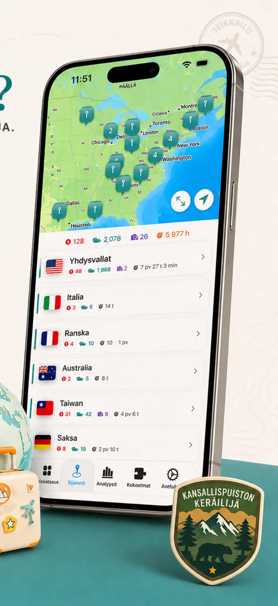
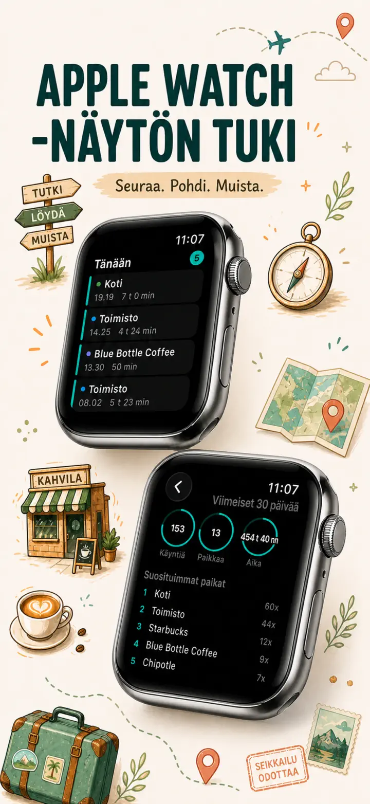
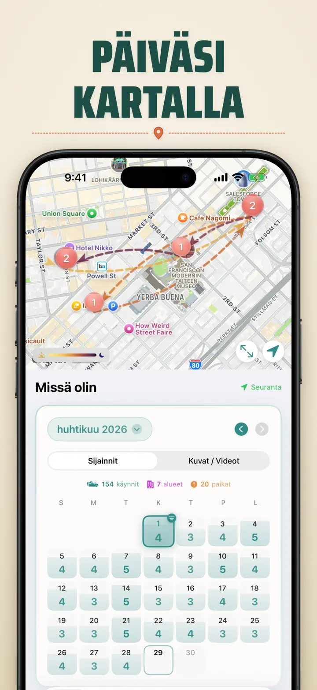
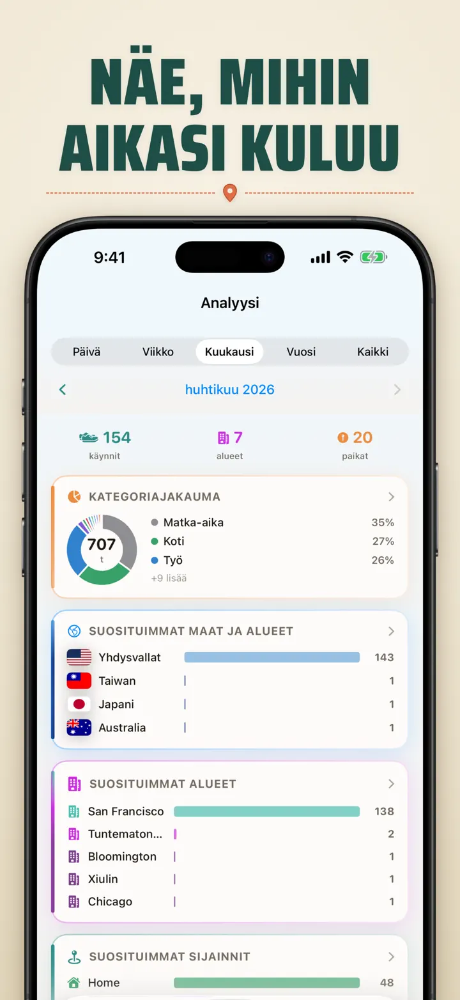
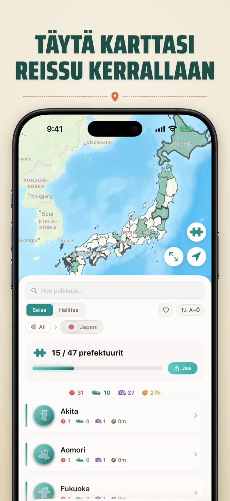
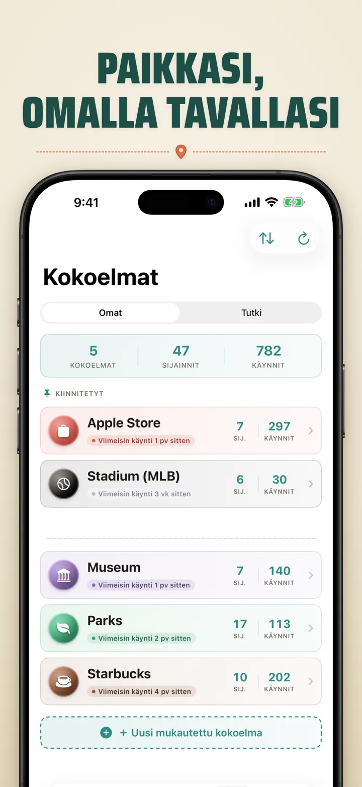
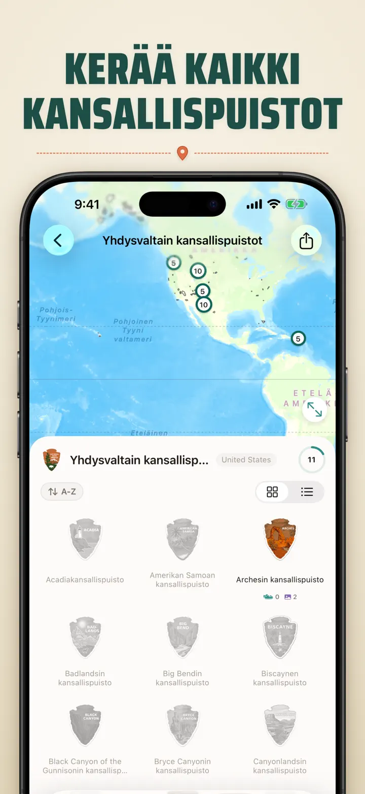
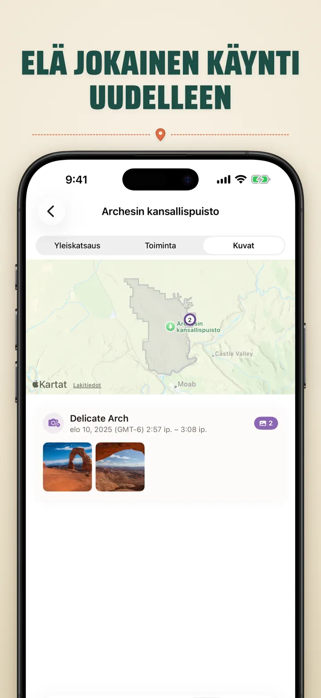

Missä olin?
Seuraa paikkoja ja valokuvia
Uutta: Japanin 103 ichinomiya-pyhäkköä, kullakin oma veistetty tunnus. Automaattinen vierailujen seuranta ja yksityinen aikajana, kaikki laitteellasi.
Lataa App StorestaTietoja apista
Where was I ? — Henkilökohtainen sijaintimuistisi
Muistatko viime kuun loistavan ravintolan? Where was I ? seuraa vierailujasi automaattisesti ja rakentaa kauniin aikajanan elämästäsi.
AUTOMAATTINEN SEURANTA
Ei manuaalista kirjaamista. Sovellus tallentaa hiljaisesti saapumisesi ja lähtösi paikoista luoden yksityiskohtaisen vierailuhistorian.
ÄLYKÄS KALENTERINÄKYMÄ
Näe vierailusi päivä-, viikko- tai kuukausijärjestyksessä. Kalenteri näyttää vierailumäärät ja uniikit paikat yhdellä silmäyksellä. Napauta päivää nähdäksesi missä olit.
KOTI- & LUKITUSNÄYTTÖ-WIDGETIT
Näe viimeisimmät vierailusi keskikokoisella Koti-widgetillä. Lukitusnäyttö-widgetit näyttävät nykyisen sijainnin, reaaliaikaisen oleskelu-ajastimen tai tämän päivän vierailumäärän — kaikki napautettavissa, jotta pääset suoraan takaisin sovellukseen.
JÄRJESTETYT SIJAINNIT
Sijainnit ryhmitellään automaattisesti alueen ja kaupungin mukaan. Määritä mukautettuja kategorioita kuten Koti, Työ, Kuntosali tai Kahvila. Luo omia kategorioita mukautetuilla kuvakkeilla ja väreillä.
TEHOKKAAT ANALYTIIKKATYÖKALUT
Löydä kaavoja elämästäsi:
- Ajankäytön jakautuminen kategorioittain
- Eniten vierailemasi paikat
- Viikkorytmianalyysi
- Vierailutiheyden trendit
- Sijaintikohtainen oleskeluaika-kaavio — näe kuinka kauan tyypillisesti viivyt, päivä-, viikko-, kuukausi- tai vuositasolla
MAA-ALUEKOKOELMA
Muuta matkasi palapeliksi! Katso kuinka monta osavaltiota tai aluetta olet vieraillut maittain. Jaa edistymisesi palapelikuvana.
KANSALLISPUISTOEDISTYMINEN
Tutki luontoa! Kirjaa kansallispuistovierailusi automaattisesti.
JAPANIN 100 KUULUISAA LINNAA
Matkalla Japanissa? Uusi sisäänrakennettu kokoelma seuraa vierailujasi maan 100 kuuluisaan linnaan. Löytyy Kokoelma-välilehdeltä → Tutki → Japani.
OMAT KOKOELMAT
Seuraa mitä haluat — Apple Storeja, museoita, panimoita. Luo kokoelma, aseta avainsanat ja se täyttyy automaattisesti. Jokainen kokoelma näyttää määrän, historian ja kartan.
TUO SIJAINTIHISTORIASI
Tuletko toisesta sovelluksesta? Tuo koko historiasi mukanasi — muoto tunnistetaan automaattisesti, suuret viennit käsitellään, ja näet esikatselun ennen kuin mitään tuodaan:
- Google Timeline (Google Maps -vienti tai Google Takeout)
- Arc Timeline (kuukausittaiset .json-tiedostot, jotka viet Arcista)
- Moves (ProtoGeo / Facebook Moves -varmuuskopio)
JOUKKOHALLINNOINTI
Hallinnoi kaikkia sijaintejasi yhdessä paikassa. Hae, lajittele ja suodata. Valitse useita sijainteja kategorisoidaksesi tai poistaaksesi ne kerralla.
TIETOSUOJA ENSIN
Sijaintitietosi pysyvät laitteellasi. Ei tiliä tarvita. Mitään tietoja ei lähetetä palvelimille.
TÄYDELLINEN KÄYTTÖÖN:
- Työtuntien ja -paikkojen seuranta
- Ravintoloiden ja kauppojen muistaminen
- Päivittäisen rutiinin analysointi
- Matkapäiväkirja ja kansallispuistot
- Kulukorvaukset ja kilometriseuranta
OMINAISUUDET:
- Automaattinen saapumis- ja lähtötunnistus
- Kalenterinäkymä päivittäisellä vierailuaikajanalla
- Koti- ja Lukitusnäyttö-widgetit syvälinkityksellä
- Sijaintien ryhmittely alueen ja kaupungin mukaan
- Mukautetut kategoriat kuvakkeineen ja väreineen
- Älykkäät kategoriaehdotukset Apple Mapsista
- Yksityiskohtainen vierailuhistoria kestoineen
- Sijaintikohtainen oleskeluaika-kaavio (päivä / viikko / kuukausi / vuosi)
- Analytiikkakojelauta näkemyksineen
- Sijaintien haku ja suodatus
- Maa-aluekokoelma jaettavalla palapelikuvalla
- Kansallispuistoedistymisen seuranta
- Sisäänrakennettu kokoelma Japanin 100 kuuluisaa linnaa
- Omat kokoelmat avainsanahaulla, käsin muokkauksella ja tilastoilla
- Joukkohallinnointi sijainneille
- Tuonti Google Timelinesta, Arc Timelinesta ja Movesista
- Vientitoiminnot
- Ei tiliä tarvita
- Tietosuojakeskeinen suunnittelu
Aloita sijaintimuistisi rakentaminen tänään. Lataa Where was I ? äläkä koskaan unohda missä olet käynyt.
Privacy Policy: https://masawata.net/privacy-policy.html Terms Of Service: https://www.apple.com/legal/internet-services/itunes/dev/stdeula/
Näyttökuvat








Missä olin?
Uutta: Japanin 103 ichinomiya-pyhäkköä, kullakin oma veistetty tunnus. Automaattinen vierailujen seuranta ja yksityinen aikajana, kaikki laitteellasi.
Lataa App Storesta